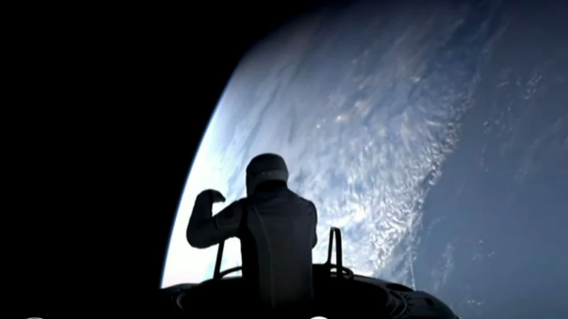

Hallazgo del tercer campo que rodea a la Tierra

“Desde aquí, la Tierra parece como un mundo perfecto”: por primera vez dos astronautas no profesionales realizan una caminata espacial privada
Científicos han encontrado evidencias de que el polo sur de nuestro satélite natural estuvo cubierto por un mar de roca líquida fundida.Este hallazgo respalda una teoría que apunta a que el magma fue lo que formó la superficie de la Luna hace unos 4.500 millones de años. Los restos del océano fueron hallados por la histórica misión Chandrayaan-3, lanzada por India, que aterrizó en el polo sur de la Luna hace un año.
El hallazgo de un "océano de magma" extinto en la Luna que ayuda a explicar cómo se formó nuestro satélite natural
Hubo una época en la que una parte de la Luna tenía un “océano”, pero muy diferente a lo que conocemos en la Tierra.Científicos han encontrado evidencias de que el polo sur de nuestro satélite natural estuvo cubierto por un mar de roca líquida fundida. Este hallazgo respalda una teoría que apunta a que el magma fue lo que formó la superficie de la Luna hace unos 4.500 millones de años.
La partícula de Higgs podría haber acabado ya con el universo
Con 13.700 millones de años de existencia, puede dar la impresión de que nuestro universo es estable. Sin embargo, diversos experimentos han sugerido que está en riesgo.
La NASA comenzará el ascenso por el cráter Jezero en Marte
El rover Perseverance de la NASA comenzará el ascenso durante un mes por el borde occidental del cráter Jezero en Marte, que incluirá algunos de los terrenos más desafiantes que haya transitado hasta la fecha
La alucinante historia que nos cuentan los restos de una supernova
SS433 fue identificada como una estrella binaria compuesta por un agujero negro algo más masivo que el Sol, lo que quedó de aquella explosión de supernova, y una estrella unas 10 veces más masiva que nuestra estrella.
¿Qué provocó la alta temperatura del Big Bang
En la vida cotidiana entendemos que cuando algo está a una temperatura muy alta, por ejemplo una olla que está al calor, lo que estamos percibiendo es la capacidad de que ocurra un intercambio de energía en forma de calor entre el objeto que está a mayor temperatura y el que está a menor temperatura.
Saturno, espléndido durante estos días de septiembre
Durante esta época, el planeta es visible toda la noche: se levanta según se acuesta el Sol, alcanza su máxima elevación (culminación) hacia la medianoche, y se pone al amanecer Saturno pasará por su oposición (se verá desde la Tierra perfectamente opuesto al Sol, iluminado frontalmente) el 8 de septiembre
El impacto de un asteroide desplazó el eje de la luna más grande del Sistema Solar
"Sabíamos que esta característica fue creada por el impacto de un asteroide hace unos 4.000 millones de años, pero no estábamos seguros de la magnitud de este impacto ni del efecto que tuvo en esa luna", explica uno de los autores, Hirata Naoyuki, de la Universidad japonesa de Kobe.